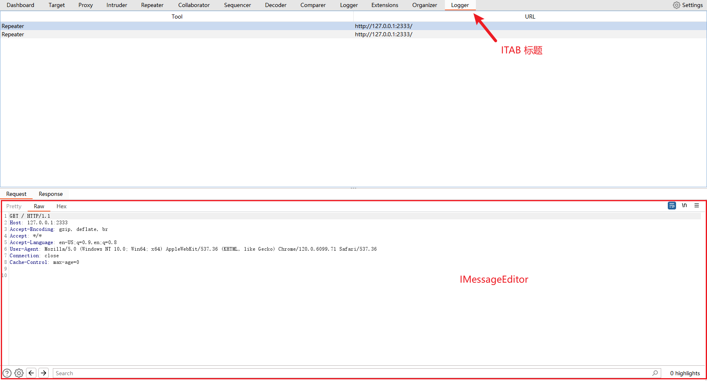
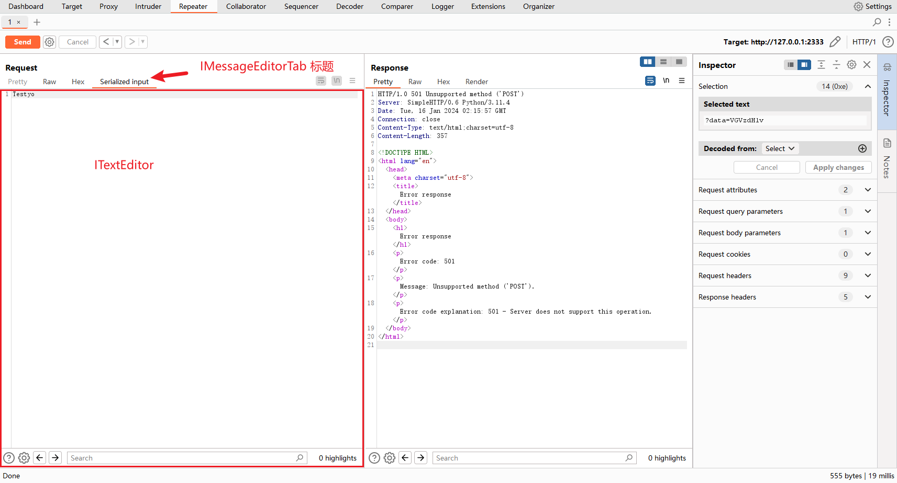
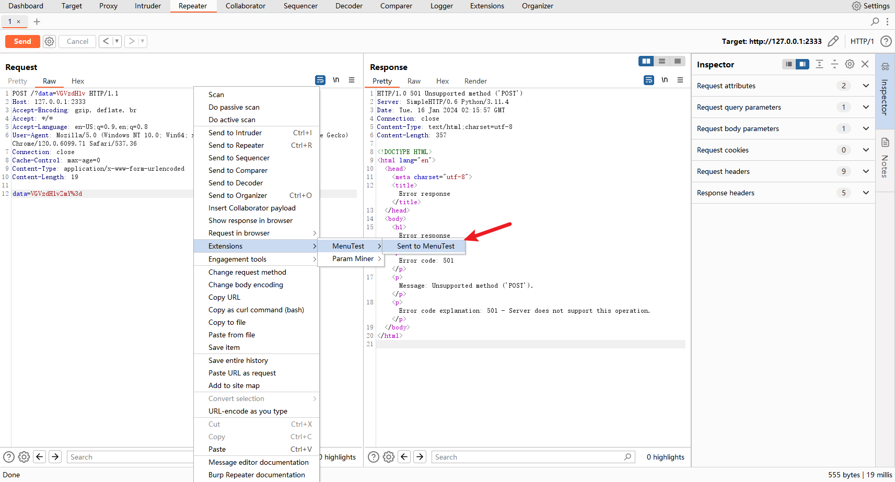
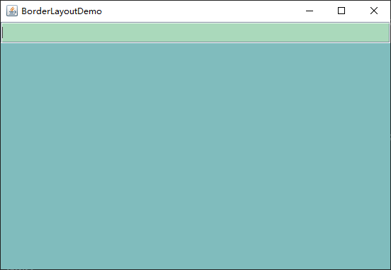
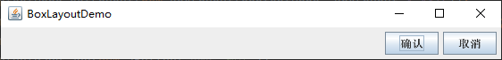
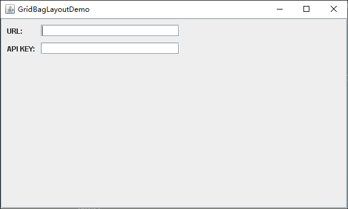

Burpsuite Java插件开发 - UI篇
对我来说，编写UI是件比较烦的事。要调布局、大小、边界、颜色之类的，调半天，界面看起来才好看点。有时还遇到组件缩成一团或字显示不全的bug，实在烦。
编写BP插件的UI，除了BurpSuite提供的几个UI API，其余的就是Java Swing知识了。
BurpSuite提供的UI API
ITAB 和 IMessageEditor
官方示例 CustomLogger 插件，用于记录HTTP请求响应，点击对应项显示其请求包和响应包。 该插件用到了 ITAB 和 IMessageEditor这两个Burp提供的UI组件，其运行效果是：

看下官方的示例代码，再自己运行一下插件，就可以知道这两个UI组件是做什么的。
IMessageEditor：通过调用IBurpExtenderCallbacks对象的IMessageEditor createMessageEditor(IMessageEditorController controller, boolean editable)方法来创建。一般创建两个IMessageEditor，一个用于显示请求包，一个显示响应包，跟BurpSuite Proxy面板提供的那样。IMessageEditor组件还需要跟IMessageEditorController类一起使用，该类用于返回要展示的HTTP请求和响应信息。ITAB：在burp顶栏多一项TAB，点击TAB标题显示自己设置的面板。通过调用IBurpExtenderCallbacks对象的void addSuiteTab(ITab tab)方法添加TAB。
IMessageEditorTab 和 ITextEditor
官方示例 CustomEditorTab 插件，在IMessageEditor组件里添加一个TAB页，用于显示请求包里data参数值的base64解码结果。该插件用到了 IMessageEditorTab 和 ITextEditor。其运行效果是：

ITextEditor：一个文本显示、编辑组件，比Java Swing内置的JTextArea文本框组件多了一些功能。支持搜索，显示行号。可通过IBurpExtenderCallbacks对象的createTextEditor()方法创建。IMessageEditorTab：在IMessageEditor组件里的TAB页。通过实现IMessageEditorTabFactory接口的IMessageEditorTab createNewInstance(IMessageEditorController controller, boolean editable)方法，该方法返回一个IMessageEditorTab对象，再通过调用IBurpExtenderCallbacks对象的void registerMessageEditorTabFactory(IMessageEditorTabFactory factory)注册IMessageEditorTabFactory对象，就实现了在IMessageEditor组件里添加一个TAB页（这段话有点绕，看代码清晰些）。IMessageEditorTab接口的几个方法：void setMessage(byte[] content, boolean isRequest)：在点击该TAB时调用。 content参数为原请求（Origin Request）或原响应（Origin Response）的完整数据。通常在这个方法里设置该TAB组件里的内容。byte[] getMessage()：返回值会覆盖原请求或响应内容。该方法里通常用于当用户修改了该TAB内的内容后，修改原请求或原响应的内容。byte[] getSelectedData()：返回当前用户所选择的数据，在该TAB里按Ctrl+C复制时调用；若返回null，则在该TAB按Ctrl + C复制的是整个包的内容。boolean isModified()：在点击该TAB后点击其它TAB时调用。返回true时，burp才会调用byte[] getMessage()方法。 若不想修改原请求或响应体的内容则返回false。java.lang.String getTabCaption()：返回TAB标题名java.awt.Component getUiComponent()：返回该TAB的UI组件boolean isEnabled(byte[] content, boolean isRequest)：是否显示该TAB。Burp对
IMessageEditorTab的几个方法的调用顺序是：
- 点击一个请求响应项显示
IMessageEditor组件后，依次调用：isEnabled -> getUiComponent -> getTabCaption。 - 再点击插件注册的TAB时，调用：
setMessage - 再点到其他TAB时，依次调用：
isModified -> getMessage
IContextMenuFactory
使用IContextMenuFactory添加右键插件菜单。写了个示例：
1 | |
运行效果：

给Burp右键插件菜单添加了一项Send to MenuTest菜单。
关键是实现IContextMenuFactory接口的List<JMenuItem> createMenuItems(IContextMenuInvocation invocation)方法。每次在Proxy、Repeater、Issue Activity等面板点击鼠标右键的时候就会调用一次该方法。
可以通过调用invocation参数的int getToolFlag()方法获取toolFlag，判断用户在哪里右键的。如：
- 在
Dashboard - Issue activiy的issue列表右键，toolFlag值为IBurpExtenderCallbacks.TOOL_SUITE - 在
Dashboard - Issue activiy下方的Request和Response栏右键，则是IBurpExtenderCallbacks.TOOL_SCANNER - 在
Target - Contents右键，是IBurpExtenderCallbacks.TOOL_TARGET - 在
Target - Issues的issue列表和其下方的Request和Response栏右键，是IBurpExtenderCallbacks.TOOL_SCANNER。 toolFlag的可能值还有IBurpExtenderCallbacks.TOOL_REPEATER，IBurpExtenderCallbacks.TOOL_PROXY等，可自行翻API文档看下。
也可以通过调用invocation参数的byte getInvocationContext()方法来判断用户在哪里右键的。
UI辅助工具
使用UI辅助工具拖动组件绘制UI界面，项目编译时工具会将UI定义文件转为java代码。
由于编写Java主程序跟BP插件之间还有些不同，前者直接编译运行，后者是编译生成jar包后再通过BP去加载，加上辅助工具生成的代码不够灵活，所以开发时并没有使用这类辅助工具，只在前期学习Java Swing布局时尝试了下。
IDEA自带一个GUI Form工具。也有一个第三方的JFormDesigner插件，比GUI Form更强大，需要购买，或者30天的试用。
使用GUI Form工具将UI定义文件转为java代码：
- 在IDEA新建一个UI定义文件，即
form文件：右键 -> New -> Swing UI Designer -> GUI Form， - 修改IDEA配置：点击
File -> Settings -> Editor -> GUI Designer，选择Java source code（即将GUI Form编译为Java代码。默认是Binary class files，即编译为class字节码）。 - 点击
Build -> Build Project，在form文件所在的目录对应的java文件就能看到GUI Form生成的java代码。
需要注意的是：
- GUI Form不支持BoxLayout、GroupLayout布局
- HSpacer和VSpacer组件是IDEA提供的，不是swing库提供的。所以要写BP插件，还不好使用到这两个组件。
即使辅助工具方便了UI编写，但有时将组件拖来拖去也弄不出想要的效果， 得了解一些布局的知识。
Java Swing 布局
官方文档： https://docs.oracle.com/javase/tutorial/uiswing/layout/index.html ， 官方提供的布局有8个，还可以实现自己的布局管理器。编写BP插件的UI，主要是展示数据页面和配置页面，常用的布局就三个：BorderLayout， BoxLayout，GridBagLayout。
BorderLayout布局
BorderLayout布局分为五个区域：上、下、左、右和中间。
BorderLayout.NORTHBorderLayout.SOUTHBorderLayout.WESTBorderLayout.EASTBorderLayout.CENTER
当窗口扩大时中间区域将尽可能获取更多空间，而其它区域只是占用它们需要的大小，当窗口缩小时，优先缩小的也是中间区域。一般用到该布局时，只用到中间区域（如：只放一个组件在中间区域，它尽可能占满窗口）或中间区域加上另一个区域（如：上区域放一个搜索框，中间区域放搜索结果； 中间区域放信息，下区域放“确定”，”取消“按钮）。
示例代码：
1 | |
效果：

还有几点说明：
- 若要设置四周几个块里组件的大小，不能使用
setMinimumSize方法，要用setPreferredSize方法。 - 该布局没有提供设置每个区域之间间隔的方法。
BoxLayout布局
BoxLayout布局是将组件沿着X轴（BoxLayout.X_AXIS）或Y轴（BoxLayout.Y_AXIS）放，可设置组件的对齐方式，如沿着Y轴放时，设置以组件的左侧或中轴线来对齐等。
通常想要组件沿着一个方向排列，只考虑一个方向上组件对齐，不考虑水平和垂直方法上都对齐时，则用BoxLayout。
示例：
1 | |
效果：

说明：
- BoxLayout布局里每个组件都是靠在一起的，如果要在组件之间有空隙，可以添加不可见组件（空白组件）：
- Rigid Area，固定大小的空白组件。
Box.createRigidArea(new Dimension(5,0))。 - Glue，伸展出去的空白组件。沿水平方向伸展：
Box.createHorizontalGlue()，沿垂直方向伸展：Box.createVerticalGlue()
- Rigid Area，固定大小的空白组件。
- BoxLayout布局会考虑到组件的最小、期望、最大大小。通过调用组件的
setXxxSize方法（这些方法定义在JComponnet类）来设置：comp.setMinimumSize(new Dimension(50, 25))：设置最小大小comp.setPreferredSize(new Dimension(50, 25))：设置期望大小comp.setMaximumSize(new Dimension(300, 300))：设置最大大小，让组件大小不随着窗口放大而改变，或者不让它默认延展到最大
- Windows下，PowerToys工具的屏幕标尺可以测量宽高， snipaste截图工具也可以
- 设置布局里组件的对齐方式：通过调用各个组件的
setAlignmentX方法和setAlignmentY方法来设置。
GridBagLayout布局
GridBagLayout布局将组件放在单元格里，每个组件占用一个或多个单元格，每一行可以是不同高度，每一列可以是不同宽度。
编写配置页面UI的时候通常用这个布局，代码：
1 | |
效果：

说明：
每次把组件添加到布局时，传递一个GridBagConstraints对象，在该对象里指定将组件放置在哪一行、哪一列，占几行，占几列，是否沿水平方向伸展等。一些GridBagConstraints对象属性 ：
gridx：组件的横坐标，即组件在第几列gridy：组件的纵坐标，即组件在第几行gridwidth：组件所占列数，即宽度，默认为1gridheight：组件所占行数，即高度，默认为1fill：当组件在其格内而不能占满其格时，通过fill的值来设定填充方式，有四个可选值：GridBagConstraints.NONE（默认），GridBagConstraints.HORIZONTAL，GridBagConstraints.VERTICAL，GridBagConstraints.BOTH。weightx：行的权重，通过这个属性来决定如何分配行的剩余空间，默认为0。weighty：列的权重，通过这个属性来决定如何分配列的剩余空间，默认为0。anchor：当组件比单元格小时，指定将组件放在单元格的哪个位置。有九个可选值：1
2
3FIRST_LINE_START PAGE_START FIRST_LINE_END
LINE_START CENTER LINE_END
LAST_LINE_START PAGE_END LAST_LINE_ENDipadx：组件横向内填充，默认为0。（没用过）ipady：组件纵向内填充，默认为0。（没用过）insets：组件外填充（没用过）
上面只提到我在开发BP插件时一些常用的布局和方法，灵活运用它们，布局里嵌布局，基本可以实现想要的UI布局。
Java Swing组件
Java Swing 组件一览 ： https://docs.oracle.com/javase/tutorial/uiswing/components/index.html ， 过一遍有什么组件，用到的时候再去看。
写UI界面基本上就是给组件设置文本、大小，设置监听，但有时候需要丰富组件的功能，如实现一个可以搜索的下拉框，显示Placeholder的文本框，支持撤销重做的文本框等等，可以去问ChatGPT或网上搜搜。如果是再复杂一些的，可能就需要自己实现了。
附：Burp默认会给组件设置一些样式，如字体，表格颜色，JProgressBar进度条样式（圆角、橙色） 等等。
灵活操作UI
Java Swing的UI操作比较灵活，可以有一些”骚操作“，像：
- 前段时间我写的小插件 burp-menu-level ，可以修改Burp右键插件菜单的层级。 （可以在BApp Store插件商店里搜
Change Menu Level，点Install安装） - 支持请求编辑框里自动补全Payload的 HopLa 插件。原理：通过注册
AWTEventListener监听器，在eventDispatched(AWTEvent event)回调方法里获取JTextArea组件，并给JTextArea组件添加监听。 - 支持自定义TAB标题图标的 BurpSuiteSharpenerEx 插件。
UI参考
Github上有很多BP插件项目的UI可以参考，这里列几个：
- OneScan 的请求响应列表页面（类似BurpSuite Proxy页面），配置页面，它用的是 自定义布局
- BurpShiroPassiveScan 的请求响应列表页面（类似BurpSuite Proxy页面）
- HaE 的可增删改的表格页面
本博客所有文章除特别声明外，均采用 CC BY-SA 4.0 协议 ，转载请注明出处！